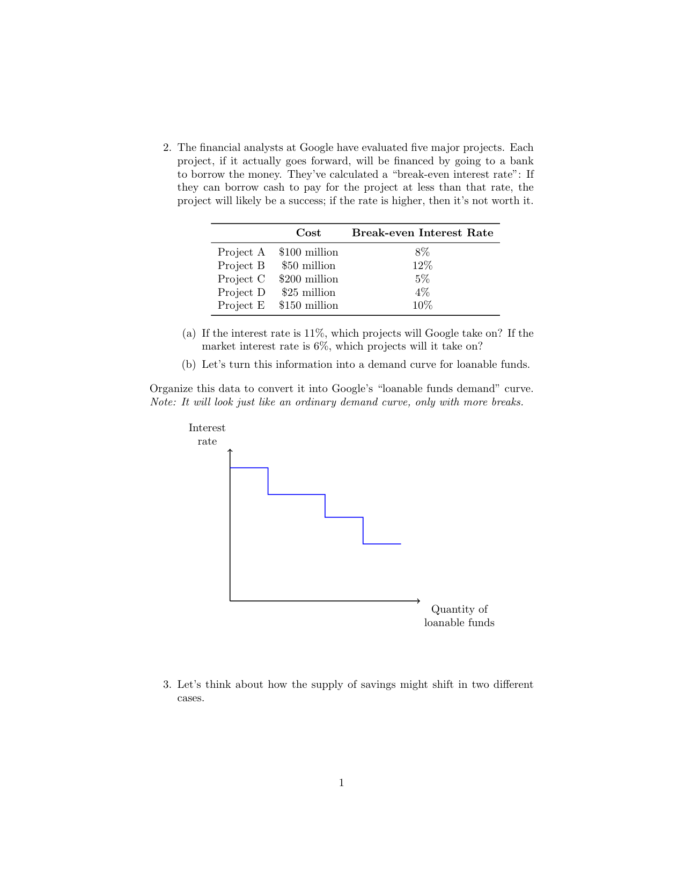
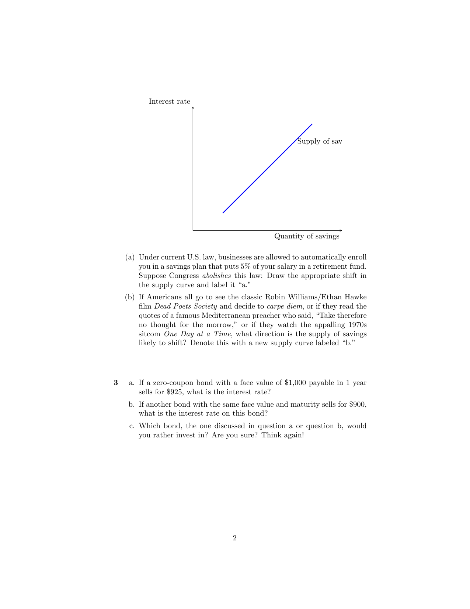

The financial analysts at Google have evaluated five major projects. Each project, if it actually goes forward, will be financed by going to a bank to borrow the money. They've calculated a "break-even interest rate": If they can borrow cash to pay for the project at less than that rate, the project will likely be a success; if the rate is higher, then it's not worth it.
| Project | Cost | Break-even Interest Rate |
|---|---|---|
| Project A | $100 million | 8% |
| Project B | $50 million | 12% |
| Project C | $200 million | 5% |
| Project D | $25 million | 4% |
| Project E | $150 million | 10% |
(a) If the interest rate is 11%, which projects will Google take on? If the market interest rate is 6%, which projects will it take on?
(b) Let's turn this information into a demand curve for loanable funds. Organize this data to convert it into Google's "loanable funds demand" curve. Note: It will look just like an ordinary demand curve, only with more breaks.

Decision rule: Take on a project only if the market interest rate is strictly less than the project's break-even rate (otherwise borrowing costs swallow the project's returns).
(a) Which projects at 11% and at 6%?
At an interest rate of 11%: Only Project B (break-even 12%) clears the bar.
Answer: At 11%, Google undertakes Project B only, borrowing $50 million.
At an interest rate of 6%: All projects with break-even rates above 6% are profitable.
Answer: At 6%, Google undertakes Projects A, B, and E, borrowing \(100 + 50 + 150 = 300\) million, or $300 million.
(b) Demand curve for loanable funds
Rank projects from highest break-even rate (taken first) to lowest, and accumulate the borrowed amount:
| Project | Break-even Rate | Cost | Cumulative Quantity Demanded |
|---|---|---|---|
| B | 12% | $50M | $50M |
| E | 10% | $150M | $200M |
| A | 8% | $100M | $300M |
| C | 5% | $200M | $500M |
| D | 4% | $25M | $525M |
Answer: Each horizontal segment corresponds to one project; the vertical drops occur at the cumulative dollar amount where Google moves on to the next, lower-break-even project.
Under current U.S. law, businesses are allowed to automatically enroll you in a savings plan that puts 5% of your salary in a retirement fund. Suppose Congress abolishes this law: Draw the appropriate shift in the supply curve and label it "a."

Repeal of automatic enrollment in retirement plans
Auto-enrollment exploits inertia: once enrolled, most workers never opt out, so 5% of their pay flows to savings by default. If Congress abolishes the law, fewer workers would actively choose to enroll, and aggregate savings at every interest rate would fall.
Answer: The supply of savings shifts leftward (curve a). At any given interest rate, the quantity of savings is smaller.
If Americans all go to see the classic Robin Williams/Ethan Hawke film Dead Poets Society and decide to carpe diem, or if they read the quotes of a famous Mediterranean preacher who said, "Take therefore no thought for the morrow," or if they watch the appalling 1970s sitcom One Day at a Time, what direction is the supply of savings likely to shift? Denote this with a new supply curve labeled "b."
"Carpe diem" / "take no thought for the morrow"
All three cultural messages encourage present-oriented consumption rather than future-oriented saving. If Americans collectively become more present-biased, they save less at every interest rate.
Answer: The supply of savings also shifts leftward (curve b).
A zero-coupon bond pays the face value at maturity and nothing in between. For a bond with face value \(F\) maturing in one year at price \(P\), the implicit interest rate \(i\) satisfies:
\[ P = \frac{F}{1+i} \quad \Longleftrightarrow \quad i = \frac{F - P}{P} \]
a. If a zero-coupon bond with a face value of $1,000 payable in 1 year sells for $925, what is the interest rate?
b. If another bond with the same face value and maturity sells for $900, what is the interest rate on this bond?
c. Which bond, the one discussed in question a or question b, would you rather invest in? Are you sure? Think again!
a. Bond A: \(F = \$1,000\), \(P = \$925\)
\[ i_A = \frac{1000 - 925}{925} = \frac{75}{925} \approx 0.0811 = 8.11\% \]
Answer: The interest rate on Bond A is approximately 8.11%.
b. Bond B: \(F = \$1,000\), \(P = \$900\)
\[ i_B = \frac{1000 - 900}{900} = \frac{100}{900} \approx 0.1111 = 11.11\% \]
Answer: The interest rate on Bond B is approximately 11.11%.
c. Which bond would you rather invest in? Think again!
First instinct: Bond B looks better — a higher yield (11.11% vs. 8.11%) on the same face value and same maturity.
Think again: If two otherwise-identical bonds trade at noticeably different prices, the market is telling us something. The cheaper bond (Bond B) almost certainly carries higher default risk — the market discounts it more heavily because there is a real chance the issuer fails to pay the full $1,000 at maturity. The extra ~3 percentage points of yield is a risk premium, not a free lunch.
Answer: The "right" choice depends on your tolerance for risk.
The lesson: Higher yields on otherwise-similar bonds usually reflect higher risk, not a market inefficiency you can exploit.